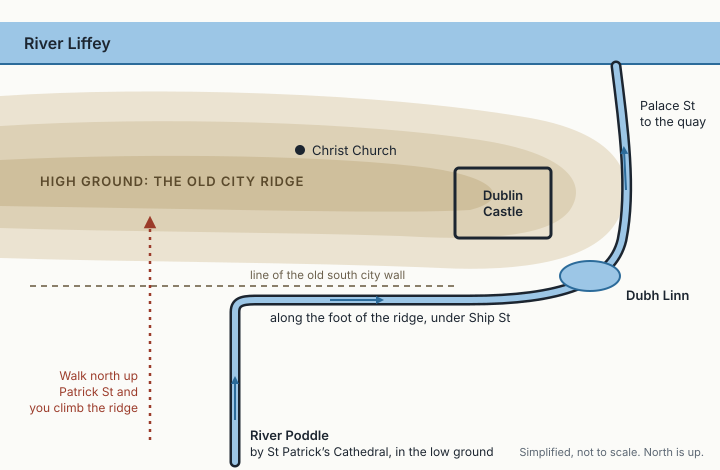
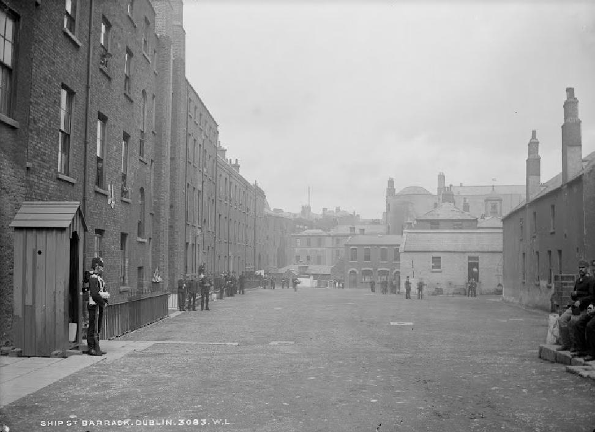
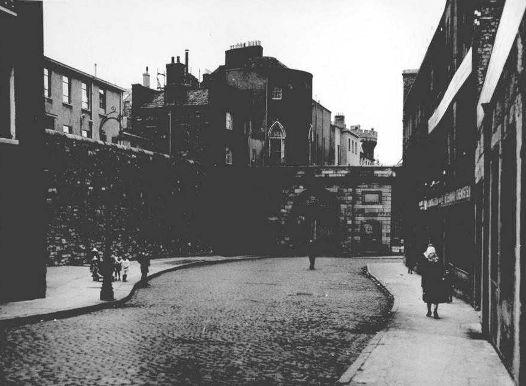
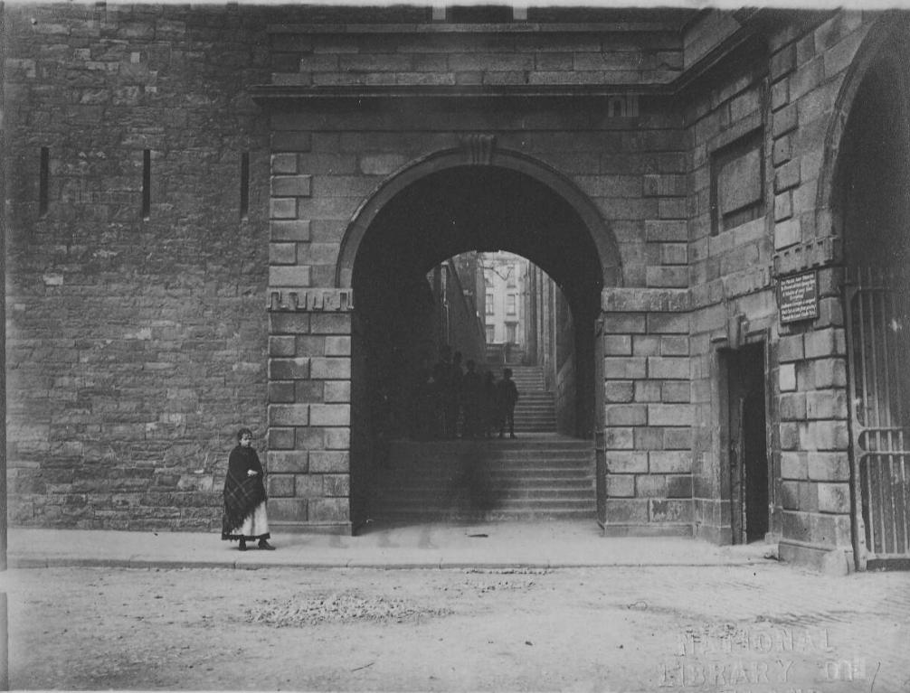
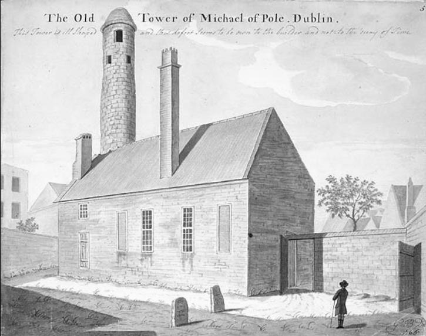
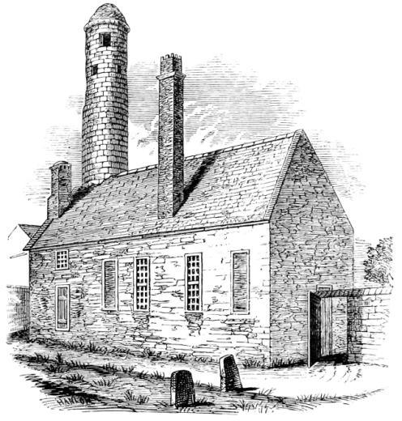
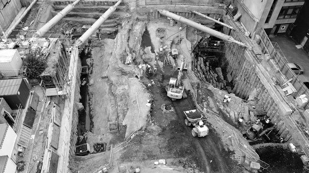
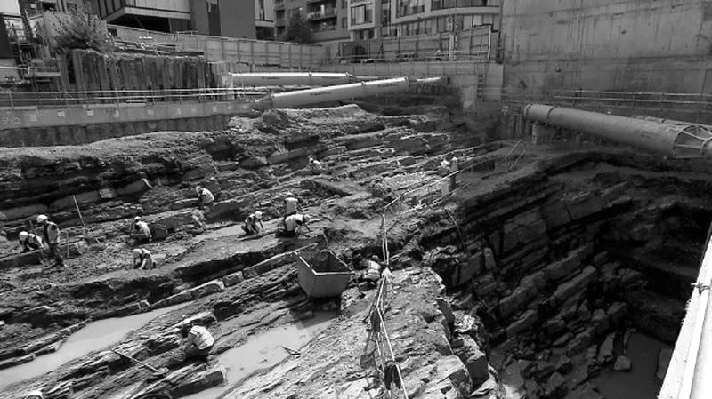
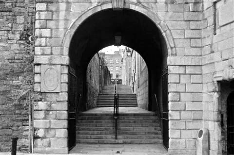
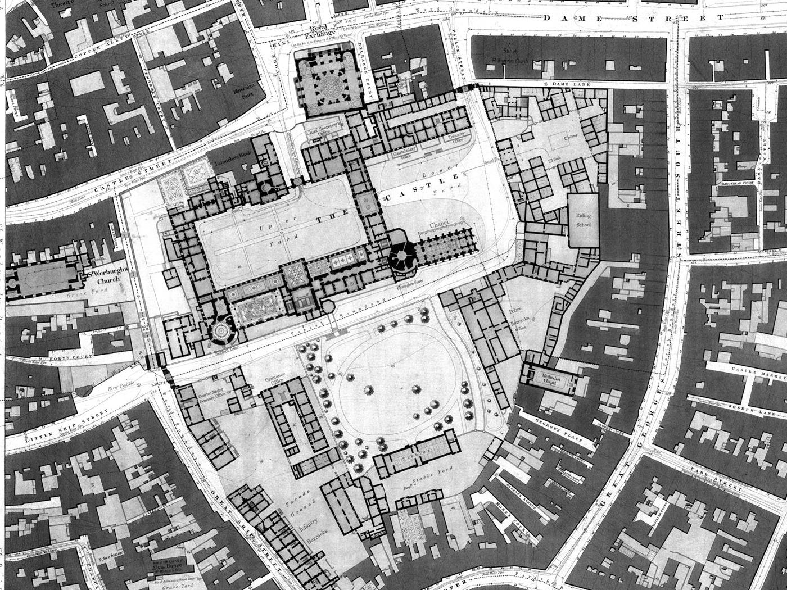

Stop 15 of 18 · Dublin Castle
Ship Street Little
A sheep market, and a ravine as deep as any dig in Dublin.
Sráid na gCaorach
Ship Street Little and Ship Street Great, which run along the southern walls of Dublin Castle, are named not after ships but after the sheep market once held here. The Irish name, Sráid na gCaorach, means Street of the Sheep.
The Poddle arrives from the west and flows under Ship Street Little and the Ship Street gate of Dublin Castle.
Round the hill, not over it
Walk from St Patrick’s Cathedral to Dublin Castle and the ground rises steeply under your feet, up Patrick Street and Nicholas Street towards Christ Church. So how does a river make the same journey? The answer is that it doesn’t climb at all. It goes round.
The old walled city stands on a ridge of glacial clay and gravel between the Liffey and the Poddle. Boreholes on a site between Ship Street Great and Chancery Lane found glacial till down to about 9 metres, with limestone bedrock beneath. St Patrick’s Cathedral was built below the ridge, on low, wet ground between branches of the river, which is why it has flooded so often. Christ Church was built on top of it.
From the cathedral the Poddle ran north, parallel with Patrick Street, in two or more courses down the west and east sides of the street, as far as Ross Road and the line of the southern city wall. There, at the foot of the ridge, it turned east and ran along the walls and the castle ramparts, past Ship Street, around the Royal Chapel, and out at the Lower Castle Gate at Palace Street and Dame Street on its way to the Liffey. That is the route given in Clair Sweeney’s book The Rivers of Dublin, quoted in the 2018 engineering report for the Ship Street site. Water always takes the lowest line, and the lowest line from the Liberties to the Liffey runs round the eastern tip of the ridge, not over the top.
It is better to think of it the other way round. The Poddle’s valley is what makes the southern and eastern edge of the ridge, and the 2020 dig below shows how deep that valley once was. The Normans built Dublin Castle on the end of the ridge, where the river and the Dubh Linn gave them a ready-made moat. You can still feel the valley today: Ship Street Little sits well below Werburgh Street and Castle Street, and the Forty Steps climb from Ship Street up to the level of the old city.

The original channel
Archaeological excavations in 2020, on a site just south of Ship Street Little and west of Ship Street Great, found that the Poddle here once ran through a ravine that fed into the Dubh Linn.
The ravine was so deep that, at the time of writing, it was the deepest archaeological excavation in the city’s history.
Once the monks of St Thomas’s Abbey had diverted water away, the channel dried up, and the ravine was quarried for stone for the walls of the Norman castle.
“An underground river!”
Sister Ann Dominica Fitzgerald opened her 1973 essay “Down the Old Poddle” with a story from Ship Street. Condemned houses were being knocked down when the bulldozer “suddenly plunged through the surface into a void”, and the men peered down: “Be the hokey! An underground river!” The Corporation engineer who came down the steps at the back of Hoey’s Court had no doubt: “What you have there boys, is the Poddle. What else could it be in Ship Street?” The machine had broken through the arch of the Poddle, buried in the 1800s.
Robert Mallet, the engineer who surveyed the river in 1844, described this last stretch the same way: from Warrenmount the water ran “in covered channels, known in the district by the name of the ‘Poddle Hole’ and passing near St. Patrick’s Cathedral, through Little Ship-street, the Castle-yard, and across Dame-street”, to the Liffey under Wellington Quay.
The ground beneath
Boreholes sunk for the nearby Ship Street application in 2005 found made ground, soil built up by people, to between 3 and 5 metres down, glacial till to about 9 metres, and limestone bedrock between 7 and 9 metres down.
The application includes a Dublin City Council drainage record map from March 2016, showing the sewers around Ship Street, Chancery Lane and Golden Lane. The sheet carries a warning that its accuracy must be checked on site.
The pool at Ship Street
Ship Street was split into Little and Great around 1700: Sir Bernard de Gomme’s map of 1673 shows a single street, and “Little Ship Street” appears in the will of Isaac Vauteau in 1711. Medieval records call it Vicus Ovinus. De Gomme’s map also shows a pool where Little and Great Ship Streets meet, and some have taken this pool, rather than the river, as the origin of the name Poddle. In 1678 the parish of St Andrew stated that the sea had once reached Ship Street, meeting the stream from the Pole Gate bridge, before the old harbour at Parliament Street was filled in. The hollow where the two streets meet is still there.
One old writer remembered the river before it hid: in the days of Queen Elizabeth it “boldly entered the city at New Street, swept around St Patrick’s, washed the sides of the Castle, near Ship Street, and fell unconcernedly into the Liffey close to Dame’s Gate.” In January 1784 it did just that, rising six feet at the cathedral and covering Ship Street, the Lower Castle Yard and Dame Street as far as Sycamore Alley, before pouring through Crampton Court and Crane Lane into the Liffey.
St Michael le Pole
On the high ground above the river, where Great Ship Street now dips below Chancery Lane, stood the church of St Michael le Pole, with a round tower beside it. It took its name from the pool on the Poddle, which also gave its name to the Pole Gate in the city wall at St Werburgh Street. Tradition says it was founded by St Mac Táil in the 8th century, and a lintel grave found under it suggests worship here very early. Churches to St Michael were often built on high places. The church was deconsecrated in 1682 and was a school by 1706, the year a storm brought down the round tower; the rest was demolished in 1789 despite protests. Gabriel Beranger’s drawings record what it looked like.
St Michael’s was one of a ring of early churches along the Poddle, with St Brigid’s in Bride Street, St Kevin’s, St Patrick’s “on the island” and St Nicholas’.
St Nicholas Without
Under Archbishop Alexander de Bicknor (1317 to 1349) the parish of St Nicholas was split into St Nicholas Within the walls and St Nicholas Without. The outer parish took in both sides of Patrick Street, New Street and most of Kevin Street, and for a long time used the north transept of St Patrick’s as its church, walled off from the rest of the cathedral. In 1666 ground off Kevin Street was set aside as its burial ground, the Cabbage Garden. The transept was a ruin from 1784 until it was reroofed in 1825, and in 1861 the parish joined St Luke’s on the Coombe.
In 1829 the householders of these parishes, St Nicholas Within and Without among them, met at the Tailors’ Hall about the Poddle Tax, which was charged on houses built over the river to keep its walls and arches in repair.
Pictures from the archive










Pictures gathered by the Crumlin and Walkinstown History Group for their Poddle research, shown here in black and white. If you know more about any of them, or hold the rights to one, please get in touch.
Watch and read
From the planning file
Facts from the flood scheme’s planning application and four local planning files.
Poddle People
- Sister Ann Dominica Fitzgerald: The first Poddleologist
Meander off the walk
A detour from this stop, off the main line of the river.
- Christ Church Cathedral: The cathedral on the ridge above the river, where St Patrick’s came when it flooded.
Parts of this page draw on research by the volunteers of the Crumlin and Walkinstown History Group, shared with poddle.ie. About their research.



